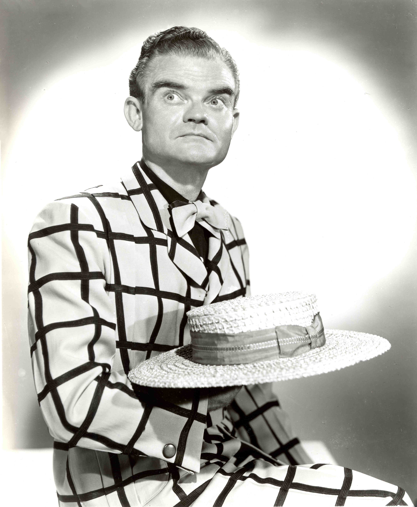

Spike Jones
An American Classic
musician & bandleader
Lindley Armstrong Jones (December 14, 1911 – May 1, 1965), known as Spike Jones, was an American musician and bandleader specializing in satirical arrangements of popular songs and classical music. Ballads receiving the Jones treatment were punctuated with gunshots, whistles, cowbells and outlandish and comedic vocals. Jones and his band recorded under the title Spike Jones and his City Slickers from the early 1940s to the mid-1950s, and toured the United States and Canada as The Musical Depreciation Revue.
Listen to his recordings here
